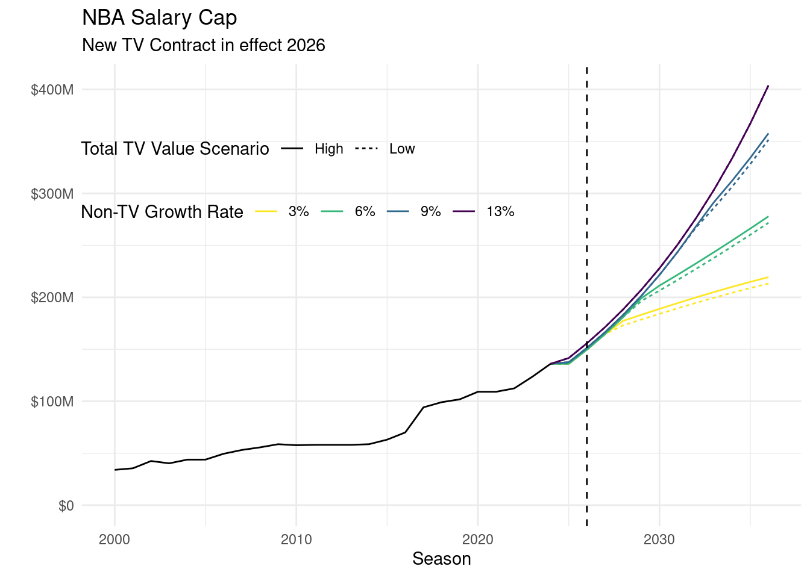

The last time there was this much uncertainty over the NBA Salary Cap (SC) projections was almost ten years ago when the current national TV contract was finalized. That National TV contract was for 9 Seasons starting with the 2016-17 Season at $2.1B – a massive increase from the $1.035B in the preceding season. It will pay out a final $3.1B in its final Season, 2024-251, after which the NBA will transition to its subsequent National TV contract that will be finalized this Summer. As of right now, only vague financial figures have been reported on the new National TV contract with the Wall Street Journal. This reporting indicates deals with three separate media companies, covering 11 Seasons each, and a total compensation of $76B (an average annual compensation about $6.9B). There is no ink to be dried on the contracts yet, yet that hasn’t stopped the flow of outrageous NBA projections. As an example, we have Spotrac (Keith Smith) suggesting the SC will surpass the $200M mark by the 2029 season. And The Athletic (Mike Vorkunov) suggests a $100+M Maximum annual salary in 2032! That would imply a $302M SC!
1 I refer to an NBA Season by the year it ends in. In other words, the 2024-25 Season will be referred to as 2025 Season.
Crazy, huh?
Well, maybe but I’m the bearer of bland news. When the last National NBA TV Contract was being finalized, reports flew furiously of a 9-year $24B total value at the time. Ultimately, the WNBA share was baked into that reported number to the tune of $600M and the true total value was $23.4B.
While I am sure that most reports that are vaguely aware of the Collective Bargaining Agreement (CBA) know that the SC is based on Basketball Related Income (BRI), I am less sure about how many other details about the SC they are aware of. Like what else it depends on and the historical trends of these components.
Let’s have a refresher on how the SC is calculated. Then we can take a stroll down memory lane from the last time a National TV deal came into effect and what was problematic about SC projections at that time. We’ll close out with what some reasonable expectations of the future SC should be. If you’re impatient and just want a one figure takeaway then jump to this Figure 5.
How is the Salary Cap Created?
When a mommy Salary and a daddy Cap love each other very much…err sorry that’s something else.
The SC is a mechanism that helps ensure that the player’s receive their Designated Share that is between 49-51% of BRI for a given season. One reason the SC exists is because player contracts are for guaranteed fixed amounts but the revenues in a year are not guaranteed (think COVID when ticket revenues went to 0 for an entire post-season). The SC attempts to smooth out the year-over-year fluctuations in BRI to ensure the Designated Share is met, but anytime there are random variables involved there will be some margin of error.
The literal section of the CBA that defines the SC is VII.2.a.1 which can be boiled down to an arithmetic formula based on four variables: Projected Basketball Related Income (\(\text{PBRI}\)); Projected Benefits (\(\text{PBen}\)); the previous Season’s adjustment (\(\text{Adj}\)); and the Number of NBA Teams (\(\text{\#Teams}\)):
\[ \text{SC}_t = \frac{0.4474*\text{PBRI}_t - \text{PBen}_t}{\text{\# of teams (30)}} + \frac{\text{Adj}_t}{\text{\# of teams (30)}} \tag{1}\]
In this mathematical notation, the subscript \(t\) references the Season in question. But let’s further unpack this equation starting with the variables in reverse order which is roughly related to their impact.
Teams
The \(\text{\#Teams}\) is pretty much the number of NBA teams for the Season in question, which has been 30 ever since the 2006 Season which was two years after the Charlotte Hornets Bobcats were created. See, it’s pretty much the number of teams in the NBA except when expansion happens where the NBA has a grace period of two Seasons for expansion teams. But aside from this quirk, it is a fairly straight-forward variable.
Adjustment
The \(\text{Adj}_t\) is typically 0 due to the escrow system2, but this refers to the situation where either 1) the NBA collectively fails to pay out the guaranteed share of BRI in Salaries and Benefits (shortfall) or 2) the players were paid more in Salaries and Benefits than their guaranteed share of BRI and the escrow amount does not make up this difference (overage). A typical NBA contract will have 10% of its total Compensation held in escrow for a given Season which serves as one mechanism to enforce the guaranteed BRI share for the players at the end of a Salary Cap year. If Total Salaries and Benefits is more than the guaranteed share of BRI for the players, then the escrow is used to pay back the NBA to ensure the guaranteed share is met. Typically, some portion of the escrow will be returned to both parties to meet the guaranteed share. However, sometimes the escrow amount is not enough to repay the NBA and this situation is referred to as an overage (ie, the NBA paid over their intended amount) which results in player’s receiving more than their guaranteed share. The NBA does not go back and recuperate this amount from the players, instead they adjust the next SC downward by this amount (\(\text{Adj}\)) as a way to artificially make up for the over payment. The \(\text{Adj}\) would be a negative number in this case.
2 The latest 2023 CBA changed the title of the previous Escrow and Tax Arrangement to the Designated Share Agreement and escrow is hardly mentioned in the 2023 CBA. But Designated Share Agreement is a mouthful and I feel like there is not a big enough difference for me to not refer to it as simply escrow.
In the other situation where the players did not receive their full share, the NBA will simply cut a check to the NBPA that satisfies the guaranteed share of BRI to distribute to their players. It is a shortfall from the NBA’s perspective of not meeting the guaranteed share of BRI. When this happens that amount to makeup for the shortfall is the \(\text{Adj}\) and is a positive value that acts to push the SC up more so there isn’t a cycle of continual shortfalls. But in general, the escrow system functions pretty well and this amount is typically 0.
Projected Benefits
There are two components to the Designated Share for Players: Salaries and Benefits. The \(\text{PBen}_t\) is an estimate of the Benefits that are expected to be paid out from BRI. Benefits include things like player’s pensions, 401(k), health insurance, playoff payouts, IST monies, that weird thing for Veteran Minimum Contracts with more than 3 years of experience where Teams only pay a fraction of the Salary and the rest of it is paid for by the NBA, etc. Benefits typically make up somewhere between 4-10% of the Designated Share for Players, so it’s an important component but Salaries are the real bread and butter for the players. \(\text{PBen}_t\) does not include any Benefits paid to Expansion Teams in their first two Seasons, keeping a theme with how Expansion is handled.
The method for estimating \(\text{PBen}\) is outlined in Article IX.8.a-c which basically boils down to adding on 4.5% growth to the previous Season’s non-BRI tied Benefits and then adding in the BRI-tied benefits. In 2011, the NBPA negotiated a requirement of the NBA to take at least 1% of BRI and place it into a Team Funding Pool, Additional Player Benefits, which created a new wrinkle in how \(\text{PBen}\) are calculated than in years prior to this. But effectively one can think of Benefits as having two components to it: the share that comes from 1% of BRI and then the residuals of that amount which can form how we think about \(\text{PBen}\):
\[ \text{PBen}_t = 0.01*\text{PBRI}_t + 1.045*\text{Residual Benefits}_{t-1} \]
Or in plain English, use the \(\text{PBRI}\) for the Season in question (we’ll describe that process in Section 1.4) and add that on to what the previous Season’s non-BRI related Benefits were with a 4.5% growth factor to it. This 4.5% growth factor is fairly common throughout the CBA as best seen as the maximum amount of raises that are available to non-Qualifying Free Agents3. Another nerdy way to point out how \(\text{PBen}\) can be represented is to reconstruct the Residual Benefits component in terms of just BRI and actual Benefits from the previous Season:
3 Don’t you dare call these non-bird rights because bird rights aren’t real.
\[ \text{PBen}_t = 0.01*\text{PBRI}_t + 1.045*(\text{Benefits}_{t-1} - 0.01*{BRI}_{t-1}) \]
One complicating factor with calculating the Residual Benefits though is that the Additional Players Benefits were used as a bit of a punching bag in the COVID Seasons. Recall, this is the portion that since 2011 it had 1% of BRI placed into it for various NBPA funded programs. In the COVID Seasons (2020-2023), when the Escrow system (which was substantially increased beyond the 10% for the Seasons in question) did not sufficiently compensate the Owners to meet their guaranteed share of BRI the Additional Player Benefits were used to make up the difference. To be more nerdy and more accurate, the \(\text{PBen}\) should be thought of as:
\[ \text{PBen}_t = 0.01*\text{PBRI}_t + 1.045*(\text{Benefits}_{t-1} - 0.01*{BRI}_{t-1} + \text{COVID}_{t-1}) \]
Unfortunately, publicly available information on the COVID payments is sparse aside from some breadcrumbs at Larry Coon’s CBAFAQ. But historically, there is a clear jump in Benefits paid out in Seasons after the 1% funding came into effect in the 2012 Season.
Keep in mind that estimating the Additional or Residual Benefits in 2021, 2022, and 2023 is a difficult task without knowing the COVID payments and they are therefore not shown. Typically the Additional Benefits is simply 1% of BRI for that Season and these did not exist prior to 2012.
The time period that we have strong confidence that the Additional Benefits were unaffected by COVID payments indicated an annual growth rate of approximately 14% (2012 to 2019) which topped out at a high of $277M.
Projected BRI
\(\text{PBRI}\) is an attempt to break away some of the fixed and large quantities of revenues for the NBA from the unknown revenue streams that are more variable. But first a small soap-box about BRI. BRI is frequently referred to as NBA revenues. This is not accurate. I’m not going to spill much ink here but instead ask you to glance through its definition in the CBA that goes on and on. But take notice of sections that have phrasing like “Fifty percent (50%) of the gross proceeds, net of fifty percent (50%) of Taxes, and net of fifty percent (50%)”. BRI is a legal definition. It is not an accounting or economic definition of income or revenue. Actual revenues of the NBA are much larger than BRI. Also notice that this amount does not include any streams of revenue that are generated by Expansion Teams in their first two Seasons, just like \(\text{PBen}\).
OK back to \(\text{PBRI}\), I think this is straight-forward from a definitional perspective. One thing to keep in mind is that the National TV contract for the NBA is a fixed and known amount for its contract. Once the National TV contract is finalized, there is no reason to not just plug this amount into projections since it is a fixed amount. While there are various other sponsorships and rights deals across the NBA and its teams that may also have a similar fixed payment, the National TV contract is the only contract for the NBA that is handled in such a unique way because it takes up such a large share of BRI.
BRI for a Season can be stated as its National TV revenue plus its non-National TV BRI. For projecting forward, you use the actual values in the National TV contract but then take the non-National TV BRI and apply that familiar 4.5% growth factor4 to the other components:
4 The 4.5% growth factor started with the 2005 CBA. The 1995 and 1999 CBA used 8% as the growth factor instead.
\[ \text{PBRI}_t = \text{TV}_t + 1.045*\text{non-TV BRI}_{t-1} \]
Or if you want to be a nerd about reducing the number of unfamiliar variables:
\[ \text{PBRI}_t = \text{TV}_t + 1.045*(\text{BRI}_{t-1} - \text{TV}_{t-1}) \]
\(\text{PBRI}\) is by far the most influential of all for SC calculations (and projections). And over time, the National TV deal has, from a long-term view, become an increasingly larger share of BRI. For context, here is the previous Season’s BRI broken apart by National TV and non-TV BRI:
The National TV deal has clunky jumps in value due to it typically being a long term contract. There was the 9 year deal beginning 2016-17, there was the 7 year deal in 2008-09, before that the 5 year deal in 2002-03, or the weird times when the NBA separately negotiated broadcast and cable at different times prior to that. It’s importance as a share of BRI has slowly crept up over time from 26% in the 2000 Season to 31% in the 2019 Season and this trend is likely to continue unless there is a marked change in the sports industry.
Forty Four and Seventy-Fourths Percent
As far as predicting the 2026 Season and future SCs, the 44.74% part of the SC is not a variable. It is simply a fixed value that the NBA and NBPA agreed to and believe this will result in a SC that closely restricts NBA Team spending enough to make the Designated Share. Think for a second, if this value was instead 100% would there be enough teams that would willingly stay under the SC? Yeah, probably not. The NBA and NBPA settled on 44.74% as the appropriate fraction of BRI, but this has only been the case since the 2011 CBA. For some historical context, the previous values used were:
| CBA | Season(s) | PBRI % | Minimum SC | Maximum SC |
|---|---|---|---|---|
| 1995 | 1996 | NA | $23M | $23M |
| 1995 | 1997 | 48.04% | $24.3M | NA |
| 1995 | 1998 | 48.04% | $25M | NA |
| 1999 | 1999 | NA | $30M | $30M |
| 1999 | 2000 | NA | $34M | $34M |
| 1999 | 2001-05 | 48.04% | NA | NA |
| 2005 | 2006 | 49.5% | NA | NA |
| 2005 | 2007-11 | 51% | NA | NA |
| 2011 | 2012 | NA | $58.044M | $58.044M |
| 2011 | 2013 | 44.74% | $58.044M | NA |
| 2011 | 2014-21 | 44.74% | NA | NA |
| COVID MOU | 2022-23 | 44.74% | \(1.03*\text{SC}_{t-1}\) | \(1.1*\text{SC}_{t-1}\) |
| 2023 | 2024-29+ | 44.74% | \(1.03*\text{SC}_{t-1}\) | \(1.1*\text{SC}_{t-1}\) |
Granted, there were a few years within this time period where the SC was literally set to a fixed number due to negotiations or because PBRI did not meet a particular threshold…but it is still a variable here.
Some Minor Adjustments
I kind of lied about how the SC is calculated. But this was because it would be unnecessarily complex for notation. Now that I’ve broken all the components down, I’m comfortable adding this complexity back in.
The 2023 CBA instituted a minimum and maximum amount that the SC can grow from Season to Season. It must increase by at least 3% from the previous Season, but it cannot increase by more than 10%. Or in nerd words:
\[ \text{Actual SC}_t = MAX( 1.03*\text{SC}_t, MIN( 1.10*\text{SC}_t)) \]
Where \(\text{SC}_t\) comes from the very first equation I put down. You still have to calculate it by this method, but then afterwards this 3-10% restriction comes into play. It was an implicit way of guaranteeing that smoothing would be enforced.
The other bit of complication comes from the handling of Expansion. In the descriptions of all variables above, Expansion Teams are not included until their third Season. This is definitely true in their first Season seeing as there would be no previous BRI or Benefits amounts to provide any reasonable estimate for the Season in question. But in their second Season they might be included. This will only occur when including the \(\text{PBen}\) and \(\text{PBRI}\) of the Expansion Team(s) results in a higher SC (still subject to the 10% maximum).
The Current National TV Deal
The definitive piece on how media speculation was rampant at the time surrounding the 2016-17 National TV deal was from Zach Lowe on 2014-10-06 when Grantland was still a thing. In that article he describes the looming spike in the SC and how there may be some possible talks about smoothing. In April of 2015 when the talks of smoothing ultimately broke down, the NBA released a forecast of SC that expected the salary cap to increase from its current $63.1 million figure to $67.1 million next season, $89 million in 2016-17 and $108 million in 2017-18. A supposed jump of $22M was going to happen when the TV deal was introduced and then the following Season there would be a $19M jump would happen again. That memo from the NBA is where the supposed double-spike came from and it was talked about ad nauseam at the time and largely taken as gospel. The actual values for the SC ended up being $70M not $67.1M, then $94.143M not $89M, and finally $99M not $108M.
The problem was that the NBA projection was built on the premise that teams would not spend beyond the Minimum Team Salary, which would cause a shortfall, which would trigger a large positive \(\text{Adj}\) to happen. I outlined these issues in June of 2015 for Peachtree Hoops to warn people there would be no second cap spike. And for the record, there was no second cap spike.
The NBA’s 2016 Off-Season was infamous for its terrible contracts handed out. Teams spent their entire cap space with haste, and then some. I’d say something snarky like “it doesn’t take an economist to figure out that teams will spend their cap space” but it actually does take an economist to point that out, and then it just gets ignored ¯\_(ツ)_/¯
Relevance to 2026 and Beyond
Bottom line is that the obvious error in the double-spike projections came from the NBA fiddling around with the \(\text{Adj}\). Do not do that.
Understanding how the SC is calculated is extremely critical because you can conceptually break it down into a handful of variables that are actually at play. Then, it becomes a bit of a prediction game about each of these individual variables. This means you should never have a non-zero \(\text{Adj}\) unless you have a strong reason to diverge from this, like a pandemic or something. Only worry about \(\text{\# of teams}\) if expansion happens, but even then you have at least one Season before it impacts the SC at all. Keep your \(\text{PBen}_{t}\) amounts reasonable. The most crucial component is \(\text{PBRI}_t\) and we know the National TV deal is the largest component within that. So let’s dive into that.
A Reasonable Projection
For the National TV Contract
Taking from the Wall Street Journal report on the upcoming National TV deal, we have a strong indication that this will be an 11 year deal. The total value appears to be $76B, but likely some portion of this is devoted to the WNBA (was previously 2.5% of the total value). And it is a near certainty that the TV contract will not be flat but instead contains a constant annual increase from Season to Season, but it’s not as obvious what this percentage will be.
The last contract increased by a flat $125M each Season, starting at $2.1B representing 5.95% of this amount. The contract before that had increased by a flat $30M each Season, which represented about 3.63% of its starting value of $825M. And before that the contract increased at $15M each Season, which was about 2.05% of the starting value of $730M.
I am fairly certain the National TV contract will continue to have a flat constant raise from its starting value and this will be for 11 Seasons (\(T\)). I am less sure about the total value but I imagine the WNBA share will be at least as high as the previous 2.5%, which I will ballpark the WNBA share to double to 5% which gives a rough range of values between $72.2B and $76.0B (\(\text{Total Value}\)). I am less certain about what to expect for a flat constant raise over the lifetime of the contract. Will it be at 5.95% of the initial value? Higher? Lower? Not sure, but at least we can pretty easily map out what this contract looks like if we fill in the parameters of Total Value and constant increase amount (as a fraction, \(z\), of initial value). That’s because this is a simple sequence based on the initial value (\(X\)):
\[ \displaylines{ \text{Total Value} = \sum_{n=1}^{T} X + z*(n-1)*X \\ \text{Total Value} = \sum_{n=1}^{T} (1 +z*(n-1))*X \\ \text{Total Value} = X*(T + z*\frac{T*(T-1)}{2}) \\ X = \frac{\text{Total Value}}{(T + z*\frac{T*(T-1)}{2})} } \]
It becomes plug-and-chug at this point. We’re certain that it’s an 11 year deal (\(T=11\)). The Total Value will be between $72.2B and $76.0B, let’s just consider those two as a low and high scenario. We can think of the constant increases (\(z\)) as the final variable and one with the most uncertainty. The middle ground is to suggest the same value as the current contract (5.95%) and also consider a lower growth (4.50%) and higher growth (7.50%). Crunching these all together gives us 6 possible paths for the National TV deal:

This gives us a projected starting payment in the 2026 Season that ranges from $4.77B to $5.64B and annual increases that range from $241M to $377M.
Salary Cap Projections
Keeping with the rules I stated for reasonable projections, let’s put together three different scenarios for SC projections. This will hinge upon the \(\text{PBRI}\) growth rate, of which we should have some empirical5 insight into. We’ve already seen the historical breakdown of BRI and TV contract in Figure 3, but this figure may be hard to determine the exact values to calculate the growth rate of Non-TV BRI.
5 I think an upcoming buzzword in the analytics field is going to be empirical or empiric. I want to get ahead of this trend.
From the Season ending in 2000 through 2023, Non-TV BRI had an annual growth rate of around 12.69%, however this growth has been slowing down over time. The elephant in the room with projections is the COVID Seasons that affected revenues (attendance) starting in March of 2020 and through roughly around April of 2021 which makes these difficult Seasons to evaluate for financial growth for the NBA. If we only look at the most recent growth in Non-TV BRI from the Season ending in 2023 to the most recent was 6.21%. These are what we will bracket our projections of the SC around: a high of 13% growth, a medium of 9%, and a low of 6%. Let’s also toss in a doomsday scenario of 3% growth to get a wider range. We will also interact these three scenarios of Non-TV growth rate with the medium growth in TV contract but with the high and low Total Value. This results in 8 different paths at which the Salary Cap can grow going forward:

Well alright. My first takeaway is that bickering over the portion of the National TV’s total value that goes to the WNBA is not that important of an issue. You can barely see the difference in the high/low scenario for these different scenarios because there is not much of an actual difference. Year-to-year growth in the SC happens because of growth of each individual component and shifting the WNBA’s share of the Total Value from 2.5% to 5% or even 10% would only affect the initial jump in the cap that smooths out over time. This leads into maybe the bigger takeaway and that is how much of a runway this National TV Deal has for sustaining the maximum 10% growth in SC for the foreseeable future. Going with the full $76B amount in a TV Deal, we can see that even the doomsday scenario in Non-TV BRI growth will see the 10% maximum hit for the next two Seasons from Table 1.
| season | 3% | 6% | 9% | 13% |
|---|---|---|---|---|
| 2024 | $136.02M | $136.02M | $136.02M | $136.02M |
| 2025 | $140.10M | $140.10M | $140.10M | $141.60M |
| 2026 | $154.11M | $154.11M | $154.11M | $155.76M |
| 2027 | $169.52M | $169.52M | $169.52M | $171.33M |
| 2028 | $177.41M | $186.48M | $186.48M | $188.47M |
| 2029 | $183.22M | $201.08M | $205.12M | $207.31M |
| 2030 | $188.91M | $211.31M | $225.64M | $228.04M |
| 2031 | $194.58M | $221.79M | $248.20M | $250.85M |
| 2032 | $200.42M | $232.51M | $272.30M | $275.93M |
| 2033 | $206.43M | $243.49M | $291.63M | $303.53M |
| 2034 | $212.62M | $254.71M | $312.25M | $333.88M |
| 2035 | $219.00M | $266.20M | $334.27M | $367.27M |
| 2036 | $225.57M | $277.94M | $357.82M | $403.99M |
Expectations of Non-TV BRI growth are crucial for how the future SC will trend. The upcoming 2025 SC will assuredly not hit the 10% maximum even in the rosiest of scenarios for Non-TV BRI growth, but when the new National TV deal comes into play that maximum will certainly kick in. Where things start to diverge is how long the 10% maximum will continue for. The doomsday scenario (3%) of growth weens off the 10% maximum of SC growth by the 2028 Season. At the lower end scenario (6%), it is the 2029 Season where SC growth slows down. For the medium scenario (9%), the 2033 Season is when SC decelerates from the 10% growth. And for the high growth (13%), SC never slows down from the 10% growth.
Where’s the Growth?
Understanding how much the SC will grow based on differing scenarios of Non-TV BRI is a mechanical exercise, which is the primary point of this post. There is not much insight to be had from understanding that sustained 6% annual growth in Non-TV BRI will set the NBA’s SC to have 10% growth until 2028. I think people who follow the CBA closely intuitively knew this although they may not have been able to give you a quantitative answer to the SC trajectory. The real value add for an NBA SC practitioner is to determine what we should expect in Non-TV BRI growth.
Over the past decade, the NBA added new streams of revenue through their jersey sponsorship program although it only accounted for approximately $137M of the $1.12B in total sponsorship from the 2018 Season, the first Season they were allowed. The sponsorship category for the NBA was reportedly around $1.5B in 2024 per SponsorUnited, which would be about 5.7% annual growth in the category. Are there other sources of innovation like the jersey patches on the horizon?
What is the outlook in revenues based on gambling? Headlines of reports indicate vague benefits like“Legal Sports Betting Will Give NBA, MLB A $1.7 Billion Revenue Bonanza: AGA Survey”. Wow, that sounds amazing! But as soon as you peel back the survey, you recognize that:
Additional fan engagement will provide an extra $425 million to the NBA. Gaming-related revenue of $160 million takes the NBA total up to $585 million.
Their measures of “fan engagement” are indirect effects for key revenue streams like media rights, sponsorship, merchandise, and ticket sales. We’ve already seen the biggest chunk of a change in media rights, so this amount is not going to be contributing to the future. It’s possible that the extra sponsorships could be the missing link for new innovation in sponsorship. But the merchandise and ticket sales? Frankly, having legalized gambling would only be one small factor of demand in those channels. The actual direct effects on revenue from legalized gambling are in the form of TV advertising (which is odd to mention because the NBA is not selling that, the networks that own the TV rights are…), sponsorships, and third-party rights to gambling entities. When you do some more napkin math, this report is indicating an increase in tens of millions of revenue. That’s no small amount, but relative to Non-TV BRI and expanding that by percentages that is a small amount.
Another potential area for innovation in the sponsorship realm is from international entities. The NBA announced a partnership with Abu Dhabi to host pre-season games in the country. This is a relatively new development that will certainly add new streams of revenue. But how does this balance with the NBA’s relationship with China and the fall-out from 2019? The controversy happened only months after the NBA announced a 5-year partnership with Tencent to be the exclusive digital rights holder in China. That Tencent deal is up at the end of the 2025 Season and it’s unclear the status of the relationship between the NBA and Tencent, although it appears that by March 2022 Tencent ended their boycott of the league that began in October 2019.
Is VR a new stream for NBA revenues? Possibly a revamp of NBA League Pass when the relationship with Turner ends a new partner can produce the service? Something else?
Expansion
In Adam Silver’s press conference at the 2024 NBA Finals the topic of expansion was brought up and Adam did not shy away from the topic. Adam is now turning his attention to expansion and it seems imminent from my reading of the tea leaves. This becomes a bit of a ticking time bomb for deflating the SC, although the decrease is not going to be massive by any stretch.
The contribution of Non-TV BRI by any expansion team is probably going to be about average, or at least I have no reason to expect it to be much higher or lower than average. If the Non-TV BRI contribution is average, then there’s still going to be a decrease in SC. This just stems from the increase in the denominator of Equation 1 and how the National TV Deal gets split from 30 teams to 31 or 32 teams.
Let’s just take 2030 as the hypothetical first Season that an expansion team begins to count towards the SC (not just play, that would be 2028 in this hypothetical). Based on the high value of National TV Deal, approximately $98.31M of the SC would be from this. Adding one more team to the league make the National TV Deal contribution $95.14M or a reduction of $3.17M. Adding two more teams would put this value at $92.17M or a reduction of $6.14M. These are not ground-breaking amounts, but they are certainly reductions in what the SC would be without the expansion that spreads National TV Revenues across more teams.
Expectations
It should not be understated the failure of meeting expectations in this upcoming National TV deal. The first rumblings of NBA expectations on the deal came in March of 2021 from CNBC (Jabari Young) who reported on league expectations:
Early thinking within league circles suggests the NBA will seek a $75 billion rights package, up from its current $24 billion deal, which pays $2.6 billion per year.
One person familiar with sports media deals said the NBA could get $70.2 billion over nine years, using metrics including total viewer hours, which helps networks determine the value of sports league rights.
While it is not explicit in reporting, the $75B figure is seemingly related to a comparable 9 Season deal or else why would the follow-up paragraph contain estimates of a non-league source refer to a 9 Season contract? Time matters and the apples-to-apples comparison of the nominal values should be annualized. From that perspective, the NBA’s new National TV deal is closer to a 2.6x-ing of the previous one although the upcoming deal contains a new “C” package for Amazon that was not present in the previous deal. This is hard to quantify as the “C” package was cobbled together from portions of local TV rights, which cannibalizes demand. There should be some level of understanding that the upcoming deal is selling “more” of the NBA which would bring down the 2.6x-ing by some portion to account for quantity. But also keep in mind, this was prior to the US economy entering a period of high inflation for a prolonged period of time as March 2021’s 12-month growth in CPI was around 2.6% but this would quickly jump to 5.4% by June of 2021 and then to 8.5% by March of 2022. Adjusting to real terms and doing very loose napkin math, the upcoming deal appears to be closer to a doubling in rights which is well short of the tripling expectation.
A doubling of rights fees is good for any business. It is, however, not what the NBA appeared to have set out for their expectation in this round of negotiation. This is a failure to meet expectations but not a failure of its business.